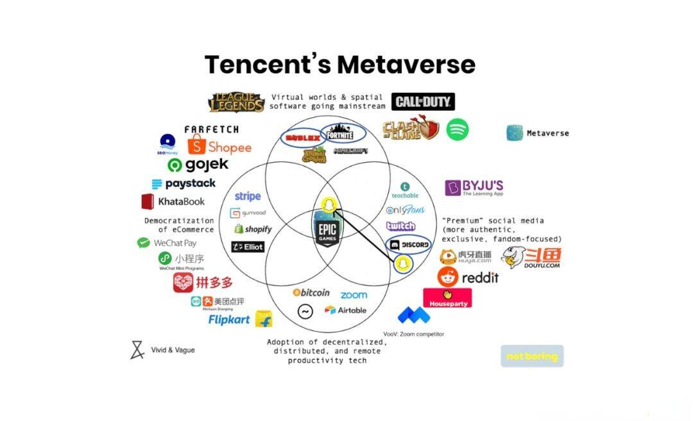

近两年，随着元宇宙的关注度越来越高，各大科技企业、地方政府纷纷布局元宇宙领域，掀起了一股“元宇宙风潮”。当下元宇宙俨然成了各界关注的热点，其下新模式新业态也不断涌现。

随着元宇宙产业的逐步发展，也出现了越来越多的质疑声。在这些质疑声中，有的毫无依据，有的一针见血。而这也从侧面说明了元宇宙仍是一个不成熟的概念，仍存在着诸多的挑战。
一方面，先进技术凸显，致使传统信息安全与意识形态保护受到挑战。另一方面，元宇宙资本当前的运作方式、虚拟世界金融支付、NFT缺乏成熟的监管体系。除此以外，在硬件、软件、基础设施等领域也有着许多的问题，但是随着技术的进步、革新，后续这些问题必定会得到解决。故此，可以有以下几点建议：
1、构建良性产业生态
通过提升大众对元宇宙的概念样貌、技术特征、发展形势、行业应用的认知，以改善相应的舆论走向。当下，元宇宙虽然更多是在游戏领域发热，但这并不是说明它是一款游戏，它也可以通过数字赋能娱乐消费、行业应用、智慧城市等，帮助提升社会生产力。
因此，建议科学研判元宇宙发展环境形势，审慎布局发展方向，紧扣数字化转型主线，以提升远程办公、医疗、教育、金融、社交等元宇宙应用场景的解决方案。其次，加强硬软件服务升级，提高应用生态链企业的产业协同，大力发展虚拟经济、线上经济等新模式新业态，共建协同创新的产业生态。
2、以技术夯实发展根基
元宇宙作为开拓性和创新性的前沿领域，不仅需要技术上的精研，还需要长期且持续的高强度投资。建议将技术突破的重点放在AR/VR设备等元宇宙的关键入口终端和软件开发工具、操作系统等基础软件上。
通过建设虚拟现实（VR/AR）等新技术推广应用公共服务平台，加强在核心芯片、显示器件、光学器件、传感器等核心器件，以及动态环境建模、人机交互、光学显示、内容生成等关键技术环节的专业技术团队联合攻关，为后续元宇宙产业化做好的技术储备。
3、完善技术和平台标准
围绕基础底层技术和应用场景制定标准，引领生态系统的创新。因为芯片、传感器、系统软件、基础软件等底层技术的研发成本巨大，所以相关企业可以和政府进行相关合作，以确保研发资金的稳定投入。
同时，加快制定元宇宙相关数据、平台的统一标准体系，如：平台、技术、产品等。通过相应智能合约协议，连接元宇宙设备、产品之间的标识解析、数据交换、安全通信等标准。发挥标准对产业的引导支撑作用，增强行业共识。
4、加快相关法律法规研究制定
通过加快数字领域法规研究，不仅可以规避相应潜在风险，还可以加快元宇宙的整体建设。元宇宙带来的虚实共存世界的法律、伦理、经济问题如果不能明确，会极大程度上阻碍元宇宙的成型，其次还会衍生出许多“浑水摸鱼”的人。加快对虚拟数字世界的司法探索，出台相关法律法规。既可以拓展民生领域应用范围的态势，还可以整治数字信息泄漏、盗用等安全风险。
5、推动地方产业导入和支持
通过出台产业促进政策，加快地方对元宇宙的产业规划。其次，组织产、学、研、用各方面力量解决元宇宙关键共性技术问题，让元宇宙产业成为数字经济增长的新引擎。
在各地地方政府、企业开始布局之后，元宇宙的发展趋势其实就已经确定了。只是因为整体的框架太大、技术有限，导致元宇宙并没有很好的呈现在我们面前，但是也不能否认其所蕴含的能量，以及大好的未来。